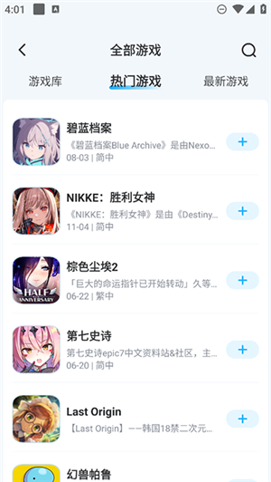
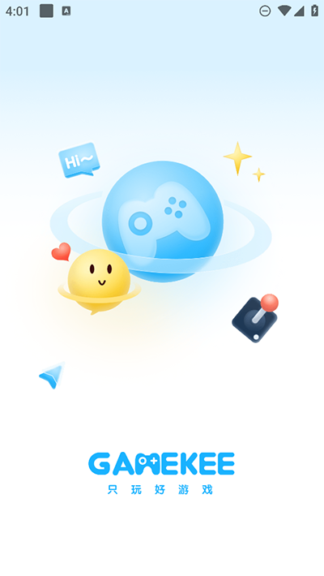

我每周给手游群做福利周报，现在把 GameKee 插进整条链里省了至少两小时
以前给三个手游群做每周福利周报要跨四五个平台找兑换码、核对有效期、手动复制，现在 GameKee 把热门二次元手游的福利汇总和攻略集中在各游戏 wiki 里，配合社区发帖功能，整条链能省出一个晚上。
开头：我每周要做一件固定的事
我手头管着三个手游玩家群——一个碧蓝档案、一个 NIKKE 胜利女神、一个综合二次元群。每周四晚上，我要给这三个群发一份「本周新兑换码 + 版本更新要点」的周报。这份东西不长，但以前做完它，要跨四个平台翻、手动核对有效期、一个个码复制进群，全程大概三个小时。
现在这条链被 GameKee 插进来之后，同一个任务压缩到一小时以内。这篇不讲软件介绍，就讲这条链前后是怎么回事，GameKee 具体插在了哪一环，以及哪些地方我还是会手动补一刀。
旧流程：跨平台找码是最大的痛点
说一下以前的流程你就明白为什么要改了。
每周四晚上七点开始，我先开 PC：
- 贴吧，搜「[游戏名] 兑换码」，翻精华帖；
- NGA 对应板块，找本周活动帖下面的回复里有没有人贴新码；
- 微博关注的几个攻略组，刷一下他们的推文；
- QQ 群里偶尔有玩家自己发的，也得翻一遍聊天记录。
四五个源跑完，能攒出一份有十来个码的清单。然后下一个环节是核对有效期——这个是最烦的。每个码都有时间窗口，有的当天就过期，有的能撑两周。贴吧帖子里通常标了起止日期，但也有人不标；NGA 的回复里贴的码经常是几天前的旧码；微博那条更是谁发谁算，没标注。我得自己进游戏输几个试，或者把码贴到另一个群里让人帮我试。
核对完有效期，再把剩下能用的码一条条复制进三个群。碧蓝档案群里只发碧蓝档案的码，NIKKE 群只发 NIKKE 的，综合群就发全部。这一步看起来快，但中间经常出现「这个码在 A 群发过了 B 群又发一次」或者「同一个码被我漏在某个群没发」的情况，得回头再补。
整条链里，信息分散在四个源和每个码单独核对有效期是两个最大的瓶颈。
新流程：GameKee 插进了「集中采集 + 初步整合」这一环
现在这条链变成：GameKee 统一采集 → 在它的社区里做一份汇总帖 → 帖子链接直接转三个群。Notion 负责最终排版备份，微信公众号同步发一份长文。GameKee 具体插的位置是「原来跨四五个源找码」的那一步，用它的游戏 wiki 体系把信息拉到一个地方。
整个链是这样的：
GameKee 各游戏 wiki 福利汇总帖 → 我在对应游戏帖子区发一份本周汇总帖 → 帖子链接直接转三个群
↓
Notion 里同步一份结构化清单（按日期 / 游戏 / 有效期归档）
↓
微信公众号发一份带解释的长文GameKee官网在这里做的事，是把原本分散在贴吧、NGA、微博的兑换码和版本信息，按游戏维度集中到各游戏 wiki 的帖子区里。它的覆盖范围以二次元手游和 RPG 为主，我管的碧蓝档案和 NIKKE 都在收录列表里，每个游戏都有独立的 wiki 和帖子区。这意味着我不用跨四五个平台找了——直接进到对应游戏 wiki，翻帖子区，找置顶的福利汇总帖就行。
这个入口的好处不只是省了来回切换页面的时间，更重要的是：每个游戏的兑换码汇总帖本身就是一个正在维护的公共文档。热门游戏的汇总帖通常由玩家或攻略组跟版本更新节奏维护，新码按时间追加，过期的码标红或者移到下方。我不用自己逐个核对有效期了——帖子里直接标了起止时间，而且评论区会有其他玩家实时反馈「这个码失效了」「那个码刚领完」，比我自己进游戏试快得多。

实操细节：这条链最容易断的两个环节
说两个实际跑起来容易卡壳的地方，以及我怎么处理。
环节一：登录是整条链的钥匙，但有个容易漏的勾选项
先把软件装上——安装包从下载拿，装完注册登录就行。要发帖、要在评论区留反馈，首先得登录。GameKee 的登录方式很干脆——手机号加短信验证码，没有密码，也不支持第三方授权。整个流程没什么门槛，但我第一次跑的时候在协议勾选框上卡住了。
具体情况是：填完手机号、拿到验证码、输进去点提交，按钮点了没反应。我以为是验证码错了，重新拿了一次，还是不行。后来才发现登录页底部有个「同意协议」的勾选框，没勾这个框，验证码填对了也提交不了。这是整条链的第一个小断链点——不注意这个勾选项，后面的发帖和评论都做不了。
我现在的做法是把这个检查动作固定进流程里：进登录页先看底部，勾上协议，再填手机号和验证码。另外验证码收不到的时候别急着连点「重新获取」按钮，越点越容易被限流，多等半分钟再试就好；实在搞不定的登录问题，GameKee文档里有完整的排查步骤。
环节二：发帖汇总时，先搜再发能省掉一半返工
在游戏 wiki 的帖子区发本周汇总帖之前，我会先在帖子区用搜索功能翻一遍「兑换码」「福利」这几个关键词。原因很简单——如果已经有人在当天发过一份汇总，我再发一份就是重复劳动，而且两篇汇总帖并存反而容易让群里的人混淆。
GameKee 的帖子区搜索会先出精准匹配，再出模糊匹配，置顶的汇总帖通常排在前面。搜完发现没人发，我再开始写自己的。另外发帖的时候，标题直接写「碧蓝档案 10 月第 4 周兑换码汇总」这种格式，别用「求助」「求码」这种模糊的标题——以后我自己回头找也快，而且帖子可能被其他玩家搜到帮他们解决同样的问题。
还有个小细节：发完帖子之后，我会留在 GameKee 的消息中心开着刷新，有人在评论区反馈某个码失效了，我第一时间去帖子里标红。这条链到这步就活了——不是我单向发码，而是社区里的玩家帮我实时做有效期验证。

效果：用数字说省了什么
具体省了多少，列可数的：
- 少了两次跨平台切换：原来四五个源，现在只进 GameKee + Notion 两个地方；
- 有效期核对从逐个手试变成看评论区：一个码原来要进游戏输一次验证，现在翻一下帖子评论就知道能不能用；
- 三个群的投递从「逐条复制」变成「一条链接转三次」：帖子链接直接往三个群里发，不用分群筛选不同游戏的码；
- 返工率明显降了：以前漏发或发错的情况大概每两周出一次，到现在三个月没出过错。
每周三小时的任务压缩到一小时以内，多出来的时间我用来在 Notion 里把兑换码按游戏和日期归档，或者把版本更新的背景故事整理进公众号长文里——这些是我以前想做但没精力做的事。
边界：什么时候这条链断了
说清楚什么时候这套流程不划算，避免你照着抄踩坑。
冷门游戏是最大的边界。GameKee 的 wiki 是玩家自建的，不是官方录入。如果你玩的是刚公布的新游、或者特别小众的独立游戏，搜不到对应的 wiki 很正常——还没人建。这种情况下，GameKee 这条链就断了，你只能回到原来的分散找码方式，或者自己申请建一个新 wiki。
另外，如果你的需求只是偶尔找一次码，而不是每周都要汇总投递，GameKee 也不一定比直接搜贴吧快——毕竟还要登录、进 wiki、翻帖子区。高频任务才是它发挥价值的场景。
最后说一个小插曲：有一次我在 NIKKE 的帖子区发完汇总，一个刚入坑的新手评论说「谢谢你整理的这些，我不知道原来有这么多码」。那条帖子后面她自己也开始帮忙在评论区反馈码的有效性。这种事让觉得我这条链不止是省时间——它其实在把零散的社区互动串成一条线。对了，这份 GameKee 的中文整理资料我顺手在 GitHub、Gitee、GitCode 三个仓库都同步了一份，国内访问哪个快就选哪个。